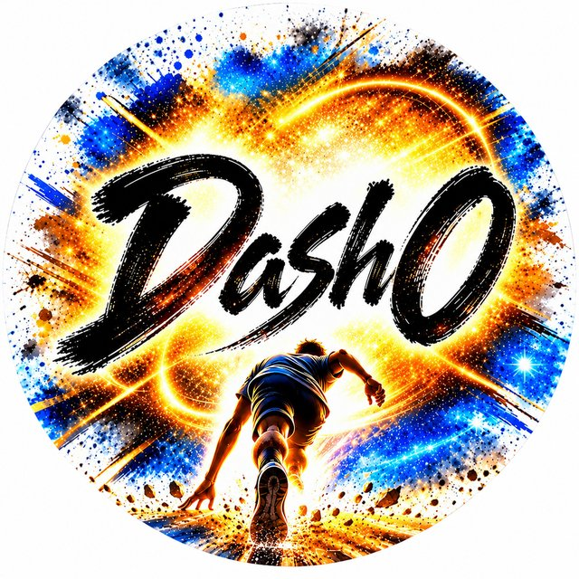

Dash0運営者も、仕事と4人の子育てをしながら、独学で4つの資格に合格しました。
限られた時間の中でどう勉強したかをそのままお伝えします。
ABOUT
教える人と教わる人に分かれるのではなく、同じように独学で資格に挑む人どうしが、励まし合い、情報を分け合える場所を目指しています。
「ゼロ」からのスタートでもかまいません。最初の一歩を、ここから一緒に。
運営者が実際に独学で合格した資格から始めます。
宅建
第二種電気工事士
測量士補
土地家屋調査士
行政書士
運営者
1989年生まれ、男性。4人の子ども(男・男・男・女)の子育てに奮闘中です。独学での資格試験勉強の経験などを発信しています。いまは行政書士に挑戦中です。
保有資格(すべて独学)
令和5年度 第二種電気工事士 取得
令和6年度 宅地建物取引士 取得
令和7年度 測量士補、土地家屋調査士試験 合格
4
独学で取得した資格
1
いま挑戦中の資格